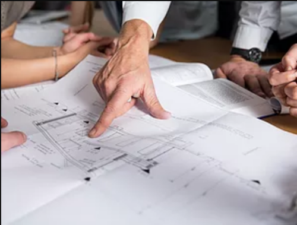
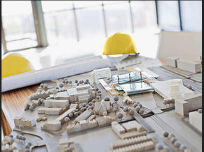

PRECONSTRUCTION PLANNING
Standard goals such as keeping
a project on time and on budget
are much easier to accomplish when
proper preconstruction planning has
been done.

ARCHITECHTURAL MODELLING
In the field of architecture
an architectural plan is a
design and planning for a
building, and can contain
architectural drawings,
specifications of the design,
calculations, time planning
of the building process, and
other documentation.
CONSTRUCTION MANAGEMENT
Construction management typically
includes complicated tasks that can
shift wildly, depending on the work
at hand, and it requires strong skills
in communication, deep knowledge of the
building process, and the ability to
problem-solve.